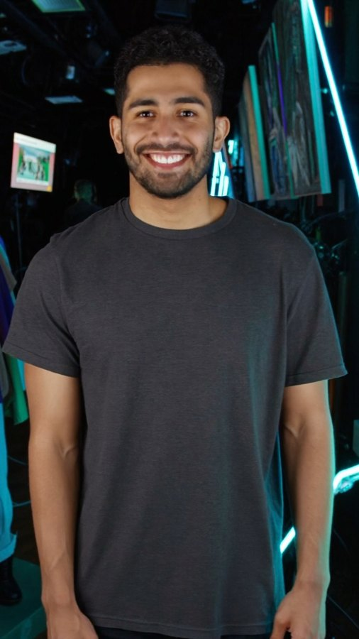

Escena de acción — persecución en la azotea
Nuestro personaje corre de noche perseguido por drones, se desliza bajo un ducto y salta al edificio vecino, en una sola toma con sonido. Es el mismo avatar que protagoniza nuestra publicidad: una identidad, cualquier género.

Así se construye la consistencia
Primero definimos el personaje contigo: rasgos, vestuario con tu marca y personalidad. De ahí sale una hoja de personaje profesional — el ADN del avatar.
Esa hoja ancla cada producción: el rostro y el vestuario se mantienen idénticos escena tras escena, video tras video. Tu público lo reconoce, como a un actor de tu marca que nunca envejece y siempre está disponible.